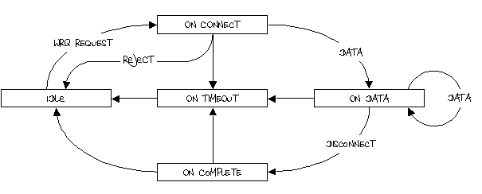

TFTP ist ein sehr einfaches auf UDP basierendes Protkoll zur Dateiübertragung. Durch seine Einfachheit, den geringen Speicherbedarf und die hohe Zuverlässigkeit hat es sich bei Ethernet fähigen Systemen als Quasistandart zum aufspielen der Firmware bzw. der Konfiguration durchgesetzt. Selbst hochmoderne PCs bieten zunehmend eine auf TFTP basierende Netzwerkbootfunktionalität.
Das Protokoll stammt aus den frühen 80er Jahren und ist in der RFC1350 beschrieben. Es unterstützt nur zwei Übertragungsmodi, das aktive Schreiben bzw. Schieben (Write ReQest) und das passive Lesen bzw Ziehen (Read ReQuest) einer Datei. Eine Verzeichnisauflistung oder Benutzerrechte sind explizit nicht im Protkoll vorgesehen. Bei eine Übertragung ist immer ein Endpunkt aktiv und schiebt die Daten, der andere Verhält sich passiv und bestätigt ausschließlich den Erhalt von Datenpaketen. Die Datenpakete sind immer in Blöcke à 512Bytes aufgeteilt. Jeder Block muss explitzit bestätig werden, bevor das nächste Paket versandt wird. Somit wird eine Paketdurchmischung ausgeschlossen und Paketverlust lässt sich durch einen einfachen, senderseitigen Timeout zuverlässig erkennen und beheben. Wenn auf ein Datenpaket nicht innerhalb einer festen Zeit bestätigt wurde muss es nochmals versandt werden. Sollte auf Grund von Laufzeitunterschieden oder dem Verlust einer Bestätigung, ein Datenpaket doppelt beim Empfänger ankommen, wird es zwar stillschweigen verworfen, aber dennoch bestätigt. Eine Bestätigung wird hingegen grundstätzlich nie wiederholt. Das Ende eine Übertragung wird durch ein 0-511 Byte langes Datenpaket beschrieben. Somit kann mittels TFTP maximal eine Datei pro Sitzung übertragen werden.
In diesem Modul wurde nur das aktive Schreiben von Dateien (WRQ) auf den Microcontroller implementiert. Dass bedeutet, dass ein externes TFTP Programm die Firmware oder die Konfiguration auf den Microcontroller schieben muss. Auf Grund der begenzten Ressourcen ist, jeweils nur eine TFTP Sitzung erlaubt, parallele Verbingungsversuche werden stillschweigend unterdrückt. Der exakte Ablauf einer Sitzung wird durch den folgenden Automaten beschrieben.
Der Automat befindet sich beim Start immer im Zustand IDLE, soblad ein WriteReQuest eintrifft wechselt er in den Zustand onTftpConnect(). Hier kann nun entschieden werden, ob die TFTP Session angenommen oder verworfen wird. Ein Rückgabe Wert ungleich Null überführt den Automaten wieder in den IDLE Zustand. Bei einem Rückabewert von Null wird auf ein Datenpaket gewartet, und beim Eintreffen onTftpData() aufgerufen. Jedes verarbeitete Datenpaket muss vom Benutzer über die Funktion tftpSendAck() bestätig werden. Dies sollte, wegen dem senderseitigem Timeout möglicht schnell nach dem Erhalt geschehen. Der Automat verharrt nun in diesem Wartezustand bis das letzte Datenpaket eingetroffen ist. Nachdem die Verbindung beendet wurde, wird onTFTPComplete() aufgerufen. Um ein Blockieren des Automaten zu verhindern, müssen in festen Abständen Zustandsüberänge stattfinden, ansonsten wird mittels eines Timeouts die Verbindung automatisch abgebrochen und die Funktion onTftpTimeout aufgerufen.
Wenn TFTP bereit ist eine Verbindung aufzubauen wird zuvor diese Methode aufgerufen. Die Verbindung durch einen Rückgabewert von 0 angenommen, ein Wert von ungleich NULL lehnt den Verbindungsaufbau ab.
Der Parameter data enthält den Dateinamen sowie Zeichensatz der zu empfangenden Datei. Dateiname und Zeichensatz sind jeweils durch eine Binäre Null abgeschlossen. Damit ergibt sich der folgende Aufbau: [Dateiname\0Zeichensatz\0] Als zusätzliche Hilfe während der Verarbeitung wird die Länge des Strings mit Hilfe des Parameters len übergeben.
Nachdem erfolgreichen Verbindungsaufbau löst jedes eintreffene Datenpaket dieses Event aus. Wenn der Datenblock vollständig empfangen ist, sollte er sofort mittels tftpSendAck() bestätig werden. Die Daten des Empfangenen blocks befinden sich in dem String data, seine länge wird durch den Parameter len übergeben. Durch die beschränkungen des TFTP Protokolls kann ein Datenpaket maximal 512Byte lang sein.
Wenn eine TFTP Verbindung erfolgreich beendet wurde, wird dieses Event aufgerufen. Es ist primär für Aufräumarbeiten nach einer erflogreichen Datenübertragung gedacht. Zum Zeitpunkt des Aufrufs ist die TFTP Verbindung schon unterbrochen.
Dieses Event wird ausgelöst, wenn eine TFTP Verbindung auf grund zulange andauernder Inaktivität beendet wurde. Es sollten in dieser Funktion aufräumarbeiten nach einem Verbindungsabbruch abgearbeitet werden. Zum Zeitpunkt des Aufrufs ist die TFTP Verbindung schon unterbrochen.